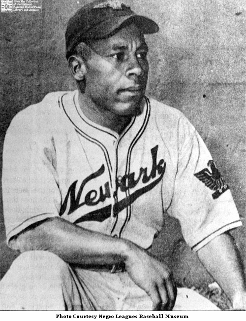
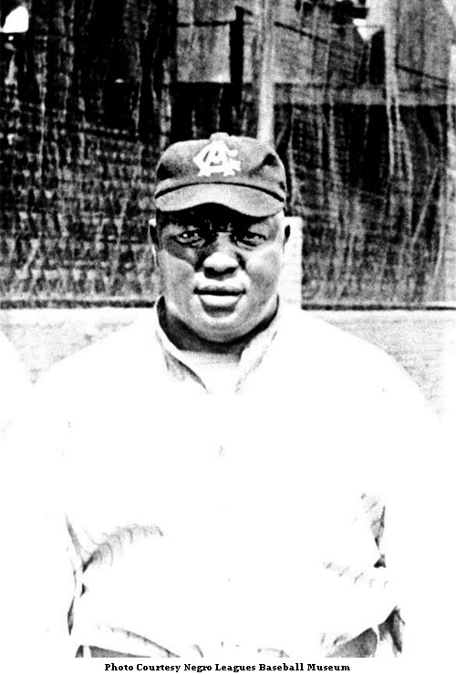
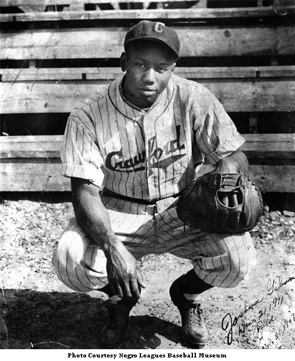
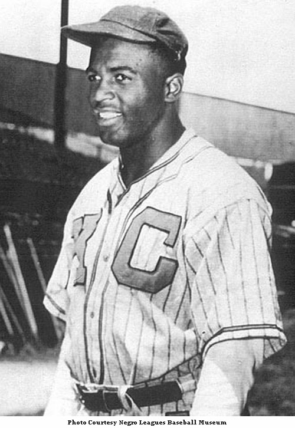
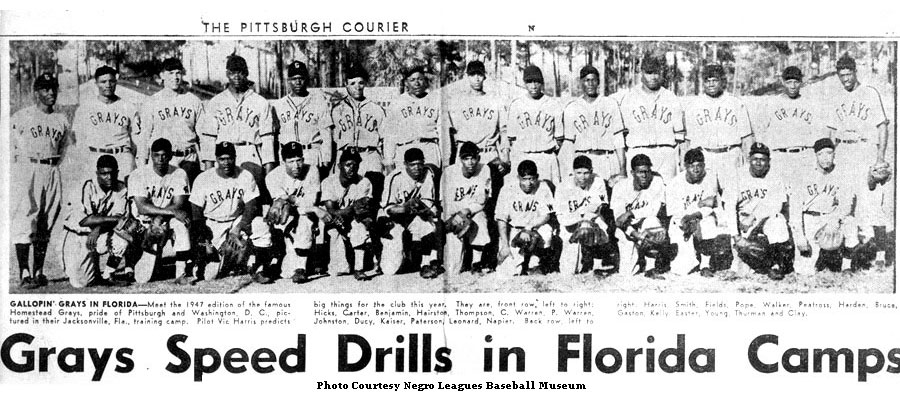

Photo GalleryA still of Cool Papa Bell.A still of Oscar Charleston.

A still of Ray Dandridge.

A still of Rube Foster.

A still of Josh Gibson.A still of Mamie 'Peanut' Johnson.A still of Buck Leonard.A still of Satchel Paige.

A still of Jackie Robinson.A still of Willie Wells.A still of a baseball team in Toledo in the 1880s.A still of the 1888 Cuban Giants.A still of the 1920 Kansas City Monarchs.A still of the 1928 St. Louis Stars.A still of the 1936 East All Star Team.A still of the New York Black Yankees in the 1940s.

A still of the 1947 Homestead Grays.A still of the 1948 West All Star Team.A still of the 1950 Memphis Red Sox.A still of the Indy Clowns in the 1950s.A still of the Baltimore Black Sox.A still of Dave Barnhill.